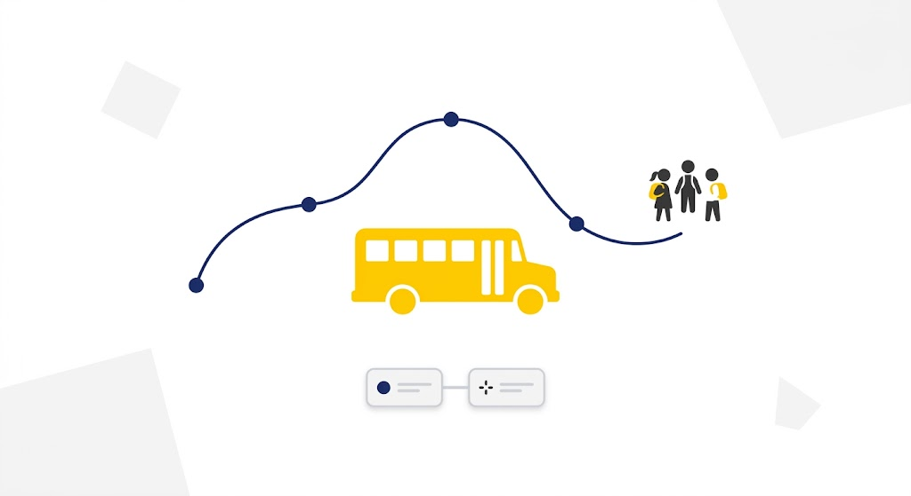
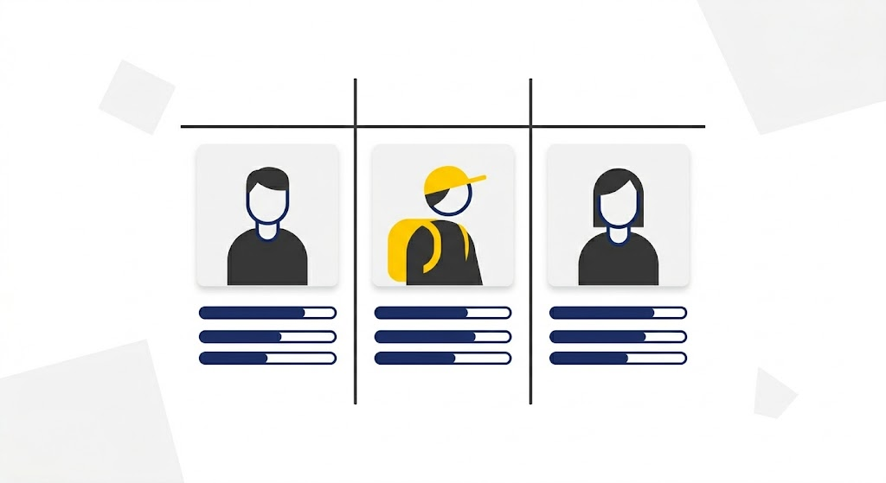

Gestión de Rutas
Gestiona las rutas escolares del sistema. Permite crear, editar, buscar y eliminar rutas, además de administrar la información de conductores y horarios.
Sistema de gestión y consulta de rutas escolares.

Gestiona las rutas escolares del sistema. Permite crear, editar, buscar y eliminar rutas, además de administrar la información de conductores y horarios.

Gestiona los estudiantes registrados. Permite crear, editar, buscar y eliminar estudiantes, así como asignarlos a una ruta escolar.